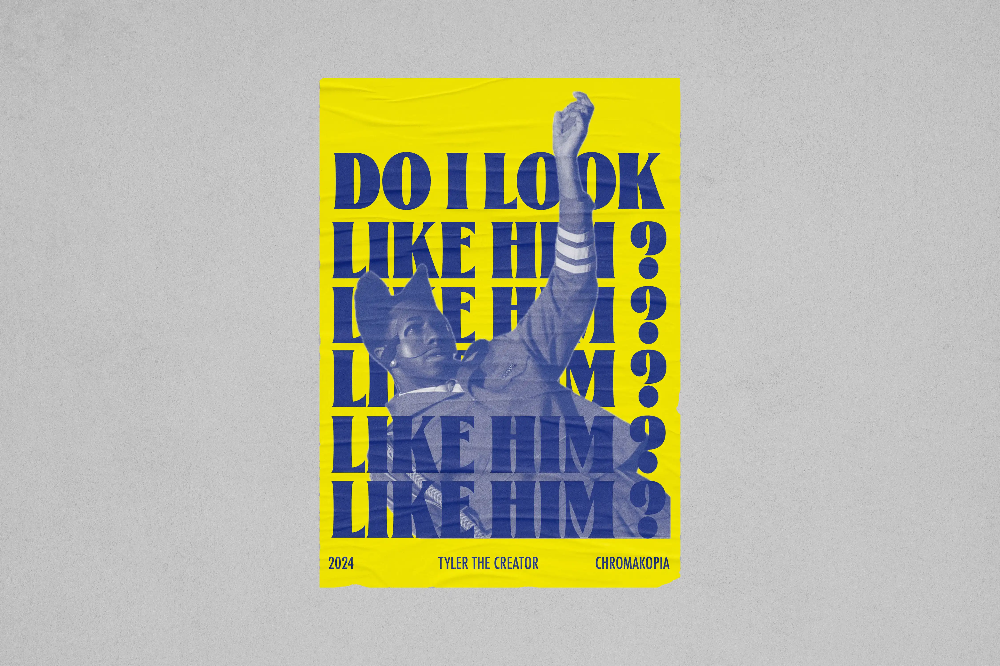
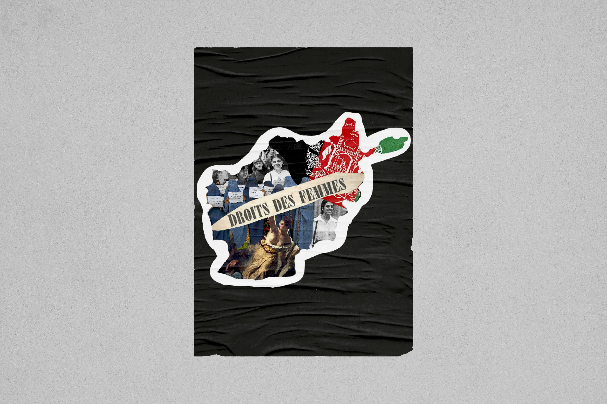
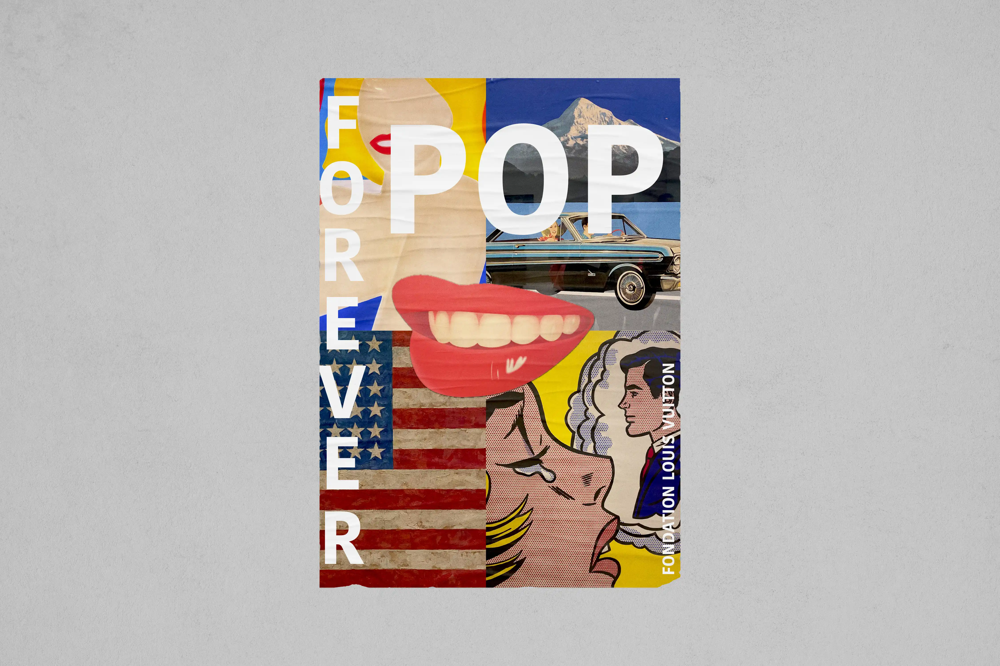

L’actualité affichée
Affiche d’actualité




Ce projet rassemble une série d’affiches créées à partir d’actualités. Chaque visuel traduit deux événements culturels, un fait marquant, et une situation politique. L’information se transforme : elle quitte les médias pour se réincarner en image, plus attrayante, et presque plus agréable à affronter pour certaines…